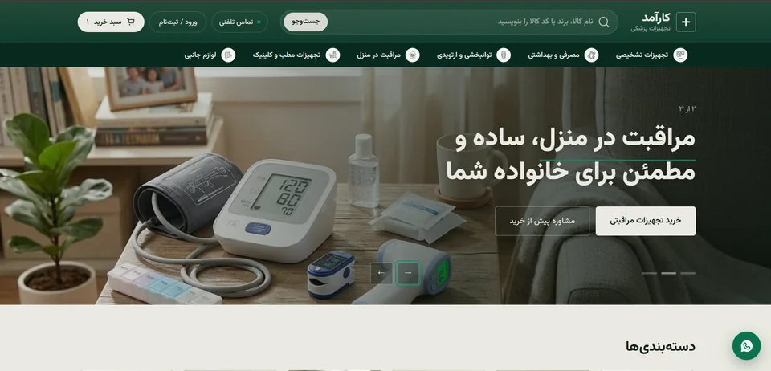
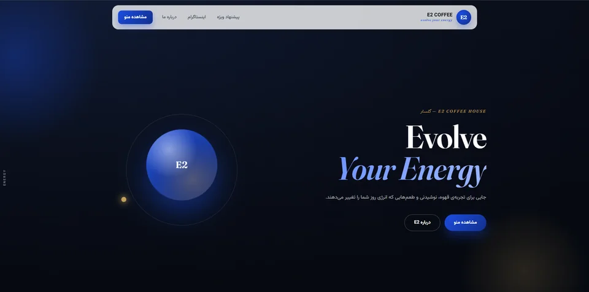
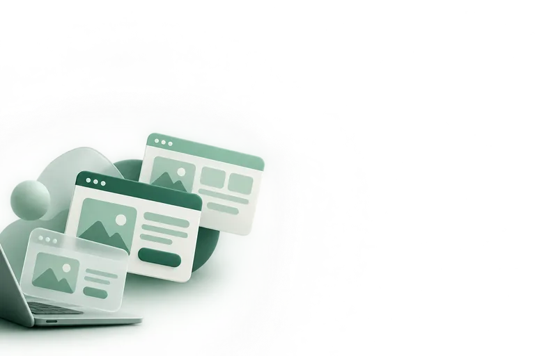
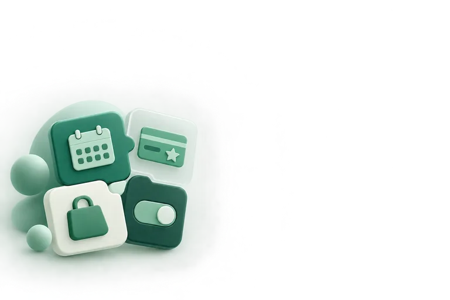
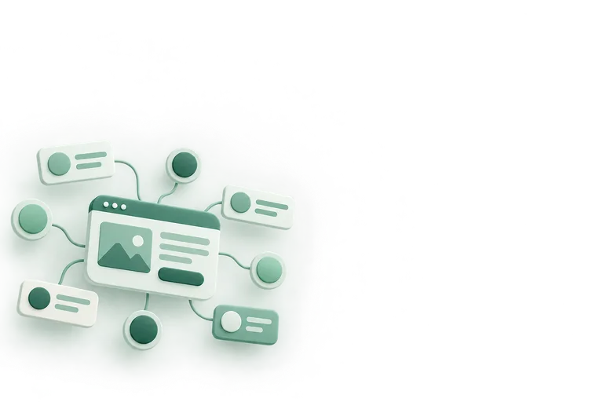
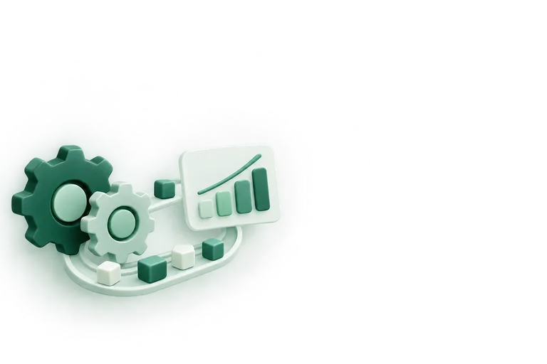
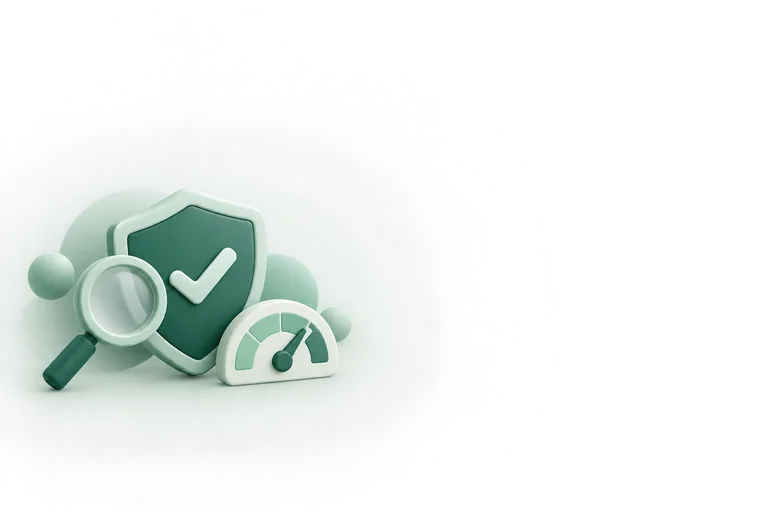
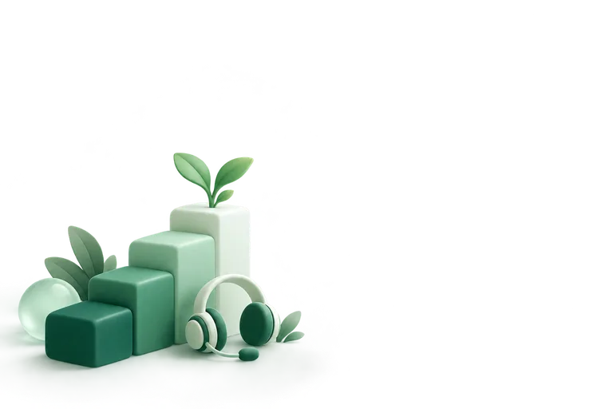

فراتر از طراحی سایت؛ ساخت زیرساخت دیجیتال برای رشد کسبوکار شما
طراحی سایت، سرویسهای آنلاین، CRM و اتوماسیون، تحلیل داده و پشتیبانی؛ از اولین ایده تا رشد کسبوکارتان، کنار شما هستیم.
آمادهاید زیرساخت دیجیتال کسبوکارتان را بسازید؟ سایت شما. سرویس شما. مسیر رشد شما.
خودتان ببینید
پروژههای واقعی، بدون واسطه و بدون ادعای اضافه.
پروژههایی که تحویل دادهایم
هر پروژه با یک نیاز مشخص شروع شد و با یک راهکار مشخص به نتیجه رسید.
-
Mery Coffee Club
منوی آنلاین دوزبانه و باشگاه مشتریان امتیازی
- نیاز کسبوکار
- کافه میخواست مشتریهای همیشگیاش را بشناسد و منوی چاپی را کنار بگذارد.
- راهکار ما
- سایت دوزبانه با منوی آنلاین، باشگاه مشتریان امتیازی و بخش نظرها و پیشنهادها.
- نتیجه
- مشتریهای همیشگی از داخل باشگاه پیگیری میشوند و منو بدون چاپ دوباره بهروز میشود.
-

Karamad MedTech
فروشگاه اینترنتی با دستهبندی فنی و پنل مدیریت
- نیاز کسبوکار
- فروش تجهیزات فقط تلفنی انجام میشد و مشخصات محصولها جایی ثبت نبود.
- راهکار ما
- فروشگاه اینترنتی با دستهبندی فنی، جستوجو، سبد خرید و پنل مدیریت محصول.
- نتیجه
- سفارشها بدون تماس تلفنی ثبت میشوند و مشخصات هر محصول یک مرجع ثابت دارد.
لینک سایت بعد از تأیید مشتری منتشر میشود.
-

E2 Café
منوی QR سبک و سریع، بهینه برای موبایل
- نیاز کسبوکار
- منوی QR لازم بود؛ سریع، سبک و قابل تغییر روزانه.
- راهکار ما
- منوی تکصفحهای با دستهبندی تبدار، بهینه برای موبایل و اینترنت کند.
- نتیجه
- تغییر قیمت و آیتم در چند دقیقه انجام میشود، بدون چاپ دوباره.
لینک سایت بعد از تأیید مشتری منتشر میشود.
نظر مشتریها
نمونه«متن نمونه: از اولین جلسه تا تحویل همهچیز مشخص بود و بعد از تحویل هم جواب سؤالهایمان را گرفتیم.»
«متن نمونه: سایت را طوری ساختند که خودمان بتوانیم محصول اضافه و قیمتها را عوض کنیم.»
هر آنچه کسبوکار شما برای رشد آنلاین لازم دارد
از طراحی سایت تا CRM، اتوماسیون، تحلیل داده و پشتیبانی؛ یک تیم، از شروع تا رشد.

طراحی و ساخت سایت
فروشگاه اینترنتی، سایت شرکتی، منوی آنلاین، کاتالوگ و لندینگ؛ با طراحی رابط کاربری اختصاصی، نه قالب آماده.
شروع پروژه
سرویسهای آنلاین اختصاصی
باشگاه مشتریان، نوبتدهی و رزرو، پنل مدیریت محتوا، ثبت سفارش و پرداخت آنلاین؛ ابزارهایی که کار روزانهی شما را سادهتر میکنند.
شروع پروژه
CRM و سیستمهای مدیریتی
مشتریها، فروش، سفارشها و کارهای تیم در یک پنل؛ متناسب با روند کاری خود شما، نه یک نرمافزار آمادهی عمومی.
شروع پروژه
اتوماسیون و تحلیل داده
خودکارسازی کارهای تکراری، و گزارشها و داشبوردهایی که نشان میدهند کسبوکارتان کجا رشد میکند و کجا نیاز به توجه دارد.
شروع پروژه
سئو، امنیت و بهینهسازی
سئوی پایه، بهینهسازی سرعت، امنیت و گواهی SSL، و خرید و تنظیم دامنه و هاست به نام خودتان.
بپرسید
پشتیبانی و توسعهی مداوم
یک دوره پشتیبانی بدون هزینه بعد از تحویل، و بعد از آن ماهانه یا موردی. سایت شما بعد از تحویل رها نمیشود و همراه کسبوکارتان رشد میکند.
جزئیات پشتیبانیپنج مرحلهی مشخص
از اولین گفتوگو تا بعد از تحویل، همیشه میدانید کار کجاست.
- ۰۱
مشاوره
میفهمیم کسبوکارتان چه میکند و سایت باید چه مشکلی را حل کند.
- ۰۲
طراحی
ساختار صفحهها و طراحی رابط کاربری؛ قبل از شروع برنامهنویسی تأیید میشود.
- ۰۳
توسعه
ساخت سایت و سرویسها، با نسخهی آزمایشی که در طول کار میبینید.
- ۰۴
تحویل
راهاندازی روی دامنه و هاست خودتان، با SSL و آموزش کار با پنل مدیریت.
- ۰۵
پشتیبانی
رفع مشکل، بهروزرسانی و توسعهی بعدی؛ همراه رشد کسبوکارتان.
تیمی متخصص، از ایده تا رشد کنار شما
پروژه را همان تیمی انجام میدهد که با آن صحبت میکنید؛ بدون واسطه و بدون برونسپاری.
پرهام موحدی
طراحی رابط کاربری و فرانتاند
طراحی رابط کاربری و پیادهسازی صفحهها، با تمرکز روی سرعت و تجربهی موبایل.
سینا علیپور
بکاند و زیرساخت
سرویسهای اختصاصی، CRM و سیستمهای مدیریتی، اتوماسیون و تحلیل داده، زیرساخت و امنیت، و پشتیبانی فنی بعد از تحویل.
مستقیم با خود تیم حرف بزنید
پاسخ سؤالهای رایج
مسیر دیجیتال کسبوکارتان را از همینجا شروع کنید
در سفارشساز، قدمبهقدم نیازتان را مشخص کنید. هر جا مطمئن نبودید، گزینهی «نمیدانم» هست و ما پیشنهاد میدهیم.